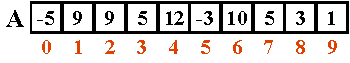

Actividad: Desarrollando programas en Python No. 8: Arreglos.
info_outline Actividad: Desarrollando programas en Python No. 8: Arreglos.
Desarrollarás la solución de algunos problemas.
group Modalidad
Individual
check Objetivos de aprendizaje
- Aplicar el concepto de arreglos en la solución de problemas.
list Instrucciones
- Analiza cada uno de los ejercicios que se presentan a continuación. Identifica cual sería el algoritmo para la solución de cada uno de los ejercicios.
- Escribe un programa en Python para cada uno de los ejercicios siguiendo tu algoritmo y haz las modificaciones necesarias para resolver el problema.
- Entrega, en la sección de "Envío de Tareas", los archivos que contengan los programas en C.
- La actividad será evaluada usando la siguiente rubrica.
-
Problemas:
Utiliza el siguiente esquema como apoyo para desarrollar tus soluciones:

-
Ejercicio 1
Desarrolla el procedimiento inicializa_arreglo, que recibe como parámetro un arreglo de 10 valores enteros. El procedimiento deberá inicializar cada localidad del arreglo a cero.
-
Ejercicio 2
Desarrolla el procedimiento captura_arreglo, que recibe un arreglo de 10 valores enteros. El procedimiento deberá pedir un valor entero al usuario y lo almacenará en la localidad correspondiente del arreglo; se pedirá un valor 10 veces (hasta llenar el arreglo). Ejemplo:
captura_arreglo(arr);
Nos mostraría en pantalla:Da un valor: 2
Da un valor: 4
Da un valor: 76
Da un valor: -5
Da un valor: -6
Da un valor: 68
Da un valor: 21
Da un valor: 42
Da un valor: 36
Da un valor: 5Al terminar el procedimiento el arreglo tendrá almacenados todos los números introducidos por el usuario en ese mismo orden.
-
Ejercicio 3
Desarrolla la función cuenta_impares, que recibe un arreglo de 10 valores enteros. La función regresa cuantos elementos del arreglo son impares. Por ejemplo, suponiendo que el vector tiene asignados los siguientes valores:

El resultado de la función sería: 8
-
Ejercicio 4
Desarrolla el procedimiento sustituye_arreglo, que recibe tres parámetros, un arreglo de 10 valores enteros, un valor entero x y un valor y. El procedimiento debe sustituir las ocurrencias de x en el arreglo por el valor de y. Por ejemplo:

sustituyeVector(arreglo, x, y);
Suponiendo que x = 3 , y = 7 -
Ejercicio 5
Desarrolla el procedimiento invierte_arreglo, que recibe un arreglo de 10 enteros. El procedimiento debe invertir el contenido del arreglo sin utilizar un arreglo auxiliar. Por ejemplo, si el arreglo inicial es:

El arreglo deberá quedar así:

En el
main()construye un menú que muestre las siguientes opciones:MENÚ DE OPCIONES
1. Inicializa arreglo
2. Captura arreglo
3. Imprime arreglo
4. Elementos impares en el arreglo
5. Sustituye arreglo
6. Invierte arreglo
7. Salir
Opción?De acuerdo a la opción seleccionada por el usuario utiliza la función apropiada de las implementadas anteriormente. Utiliza un ciclo
do-whilepara desplegar el menú en pantalla hasta que el usuario seleccione la opción de Salir. Recuerda que la captura de datos y validación de valores debe ser realizada en elmain( ), pues las funciones NO pueden realizar las tareas de validación o captura de datos.Incluye el algoritmo como comentario al inicio del programa.
-
Programa Abierto:
Desarrolla tu propio programa donde uses arreglos para representar al menos 2 conceptor diferentes. Por ejemplo:
- Poblaciones.
- Resultados de eventos.
- Presencia o ausencia de características.
- Codigo o cifrados.
- Vectores.
Este programa es tuyo, úsalo para hacer cosas interesante y retadoras no cosas fáciles.
attachmentRecursos
offline_pin Especificaciones de entrega
Los archivos (el .c de cada programa) deberán ser entregados a través de la sección de "Envío de Tareas" de Blackboard los programas tienen que llevar por nombre tu matricula y el número de ejercicio e.g. "A008829001.c".